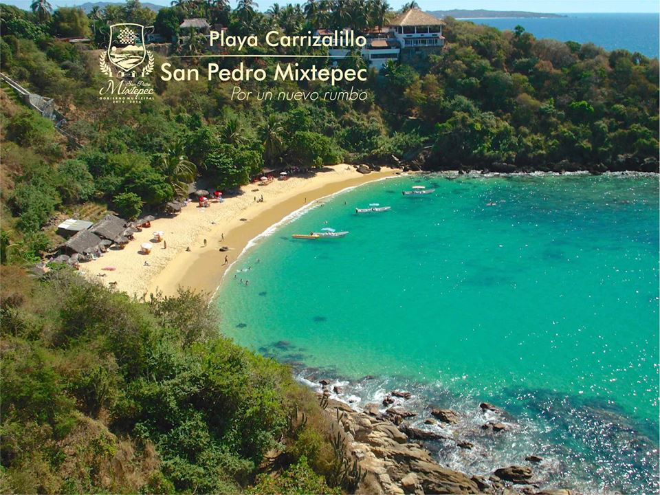

Playa Carrizalillo

Es ideal para practica el snorkel y la natación. Existen palapas con servicio de restaurantes y renta de equipo para el buceo libre. La zona comercial ubicada en el fraccionamiento Rinconada
Es ideal para practicar el snorkel, natación y surf. En su arena fina y blanca encontrarás unas palapas con servicio de restaurantes de mariscos y pescados, y otras en donde podrás rentar tu equipo para bucear en las aguas cristalinas y tranquilas.
Para llegar a ella hay que bajar una pendiente con aproximadamente 100 escalones, sin embargo las escalinatas son muy seguras.
Existe una pequeña zona comercial ubicada en el fraccionamiento Rinconada (a sólo 200 metros de la playa) que ofrece cafeterias, internet, lavanderías y tiendas de artesanias.
Carrizalillo se localiza al poniente de la población de Puerto Escondido, tomando la carretera costera con destino a Pinotepa Nacional. Aproximadamente a 500 metros (1640.41 pies) de la población desvíese a la izquierda y agarre por una calle la cual llega hasta 100 (328.08 pies) metros antes de la playa. A sólo 15 minutos caminando del centro y a 5 minutos del fraccionamiento "Bacocho". También se puede alquilar una lancha para llegar por mar.